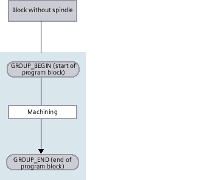
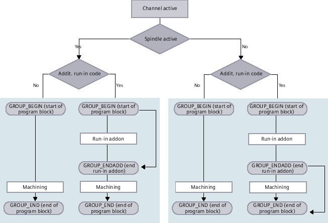

You have various options to run-in programs.
Running-in channel-by-channel
Select the channels that you wish to process using the "Running-in" function in the "Program control" window. The channels not selected here are brought into the "Program test (PRT)" state. As a consequence, the channels are only calculated, but are not processed.
No M and auxiliary functions or tool functions are output. Spindle commands are only output for selected spindles.
Running-in spindle-by-spindle
Only machining operations are executed for the spindle selected under program control / running-in. When programming, by forming the appropriate blocks, allocate the corresponding machining operations to a spindle.
When generating a block, a complete block can be assigned to a spindle. For the case that the group is not executed, as the specified spindle should not be considered when running in, then it is possible to temporarily activate what is known as "Addit. run-in code".
| | Software options You require the "programSYNC" option for cross-channel program control. |
Requirement
Multi-channel machine
You have selected the multi-channel view via "Settings for channel functionalities".
Procedure
Examples
The following flow diagram shows the parts of the program blocks if a spindle was not selected in the program block:
Block without spindle
The following flow diagram shows the parts of the program blocks for an active channel that you selected in window "Program control" using the "Run-in" function:
Channel activated, program block with spindle
The following flow diagram shows the parts of the program blocks for an inactive channel, which you deactivated in window "Program control" using the "Run-in" function and therefore brought into the "Program test (PLT)" state:
Channel inactive, program block with spindle